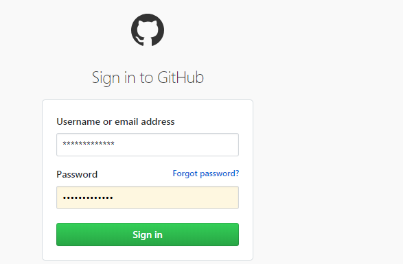

版本控制笔记
2018-11-25
第 1 章 版本控制系统简介
目前比较常用的平台有 github、 gitlab、bitbucket. 下面说说这个平台的优缺点。
github：参与人数多，项目可被多人进行参与维护，但是文件大小不能超过100Mb，存储库可以托管信息1Gb。GitHub的服务不是完全免费的。如设置项目为私人项目，需要付费。
gitlab：功能基本上和 github 相差不大，允许免费设置仓库权限。然而界面相对较慢，存在存储库常见的技术问题。
BitBucket：服务也非常类似于GitHub，对于小团队免费获得无限数量的免费存储库，但是系统不稳定。
1.1 准备工作
注册账号
自行登录个人喜好的平台进行进行注册。
安装软件
若喜欢以图像化界面软件进行代码的提交、克隆项目，建议使用 SourceTree 软件。若喜欢命令行的形式提交、克隆项目， windows 小伙伴需要下载 git 软件（mac 和 linux 系统自带， 无需安装）。
第三方软件SourceTree 安装步骤如下：
1) 登录 SourceTree官网， 下载适应自己电脑系统合适的版本;
2) 双击 SourcetreeSetup.exe 软件，进行安装。
3) 打开 Sourcetree 安装的文件夹 ，在此文件下新建 accounts.json 文件。文件的内容如下：
[
{
"$id": "1",
"$type": "SourceTree.Api.Host.Identity.Model.IdentityAccount, SourceTree.Api.Host.Identity",
"Authenticate": true,
"HostInstance": {
"$id": "2",
"$type": "SourceTree.Host.Atlassianaccount.AtlassianAccountInstance, SourceTree.Host.AtlassianAccount",
"Host": {
"$id": "3",
"$type": "SourceTree.Host.Atlassianaccount.AtlassianAccountHost, SourceTree.Host.AtlassianAccount",
"Id": "atlassian account"
},
"BaseUrl": "https://id.atlassian.com/"
},
"Credentials": {
"$id": "4",
"$type": "SourceTree.Model.BasicAuthCredentials, SourceTree.Api.Account",
"Username": "",
"Email": null
},
"IsDefault": false
}
]1.2 操作流程
命令行
SourceTree
1) 登录版本控制平台，这里以 github 为例，访问 https://github.com/login github 登录主面，键入账号和密码，点击登录按钮。如下图：

2) 在远程服务端建里新的 git 项目，点击 + 旁边的下拉按钮，选择 New repository 如下图：
3) 在进行了步骤2操作，出现下面的界面，按照图中的步骤进行操作。
4) 在进行了步骤3操作，出现下图界面，找到项目的git地址。
5) 打开 SourceTree 软件，从Git服务器上拉取项目。如下图：
6) 往本地git 项目中添加文件。示例添加 HelloWorld.java .如下：
7) 在一般大型项目中，一般 master 分支存放的生产环境的文件，开发过程中产生的文件，一般存放在 dev 分支，待开发分支的代码测试无误，方可推送至 master 分支，下面新建 dev 分支，如下图：
7) 提交文件， 先从本地提交到缓冲区， 然后从缓冲区推送到远程服务端。如下图：
推送之后，可以在github页面进行查看。
7) 合并分支， 发布正式版本。如下图：
8) 最后结果如下图：
看起来很复杂，用命令行来说就是三板斧：
添加缓冲区： git add file_name
提交： git commit -m"commit description"
推送至远程服务端: git push